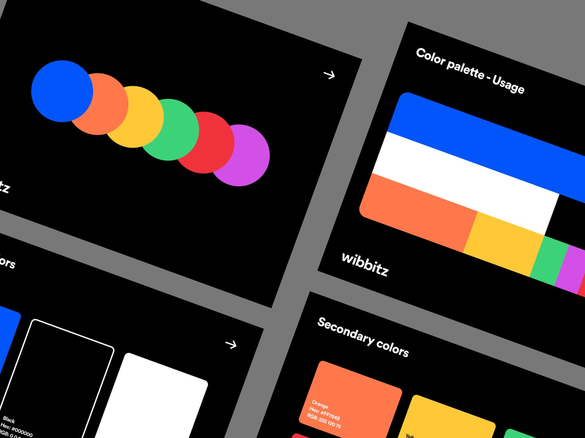
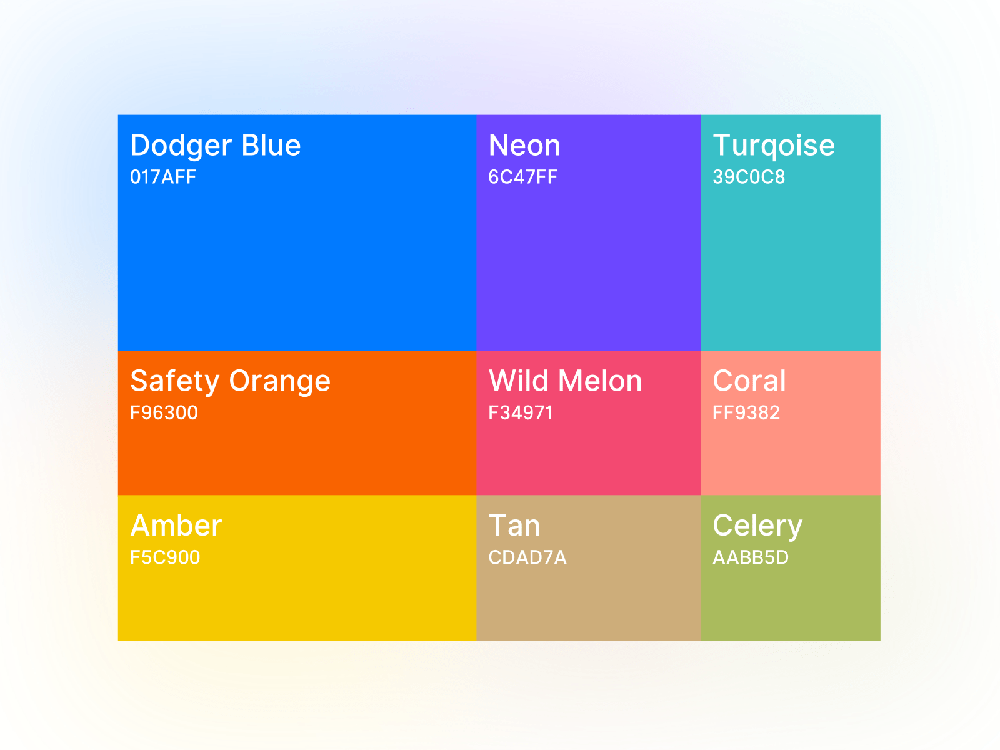

Working with color is one of the most fun parts of web design. But if you don’t use them right in your CSS code, colors can also tank a site’s usability and accessibility. In this post, we’ll explore simple, real-world tips for effectively using color in your stylesheets.
How to create a foolproof color palette
Choosing the right colors for a website can be tricky. Get one wrong and your entire design can feel off. Luckily, there are some simple strategies to create a foolproof web color palette:
-
Limit your palette - Stick to just 2-4 core colors for most sites. Too many colors look disjointed.
-
Focus on one dominant hue - Pick one main color and derive the rest of the palette from it. This creates cohesion.
-
Use color wheel relationships - Choose adjacent or complementary colors on the wheel for built-in harmony.
-
Consider tone and contrast - Include light, medium and dark tones for visual interest. Test contrast for accessibility.

Focus on one dominant hue - Pick one main color and derive the rest of the palette from it. This creates cohesion.
Following these simple tips will ensure you have a tightly edited, flexible, and foolproof palette ready for your next web project.
The best CSS color formats for different needs
When adding color in CSS, you have a few formatting options to choose from. Each has their own strengths depending on the use case. For specifying plain color values, hex codes are the usual default.

They allow for millions of specific color values in a compact 6-character string. But RGB and HSL values also have advantages. RGB provides an easy way to adjust opacity with the alpha channel. And HSL makes it simple to tweak hue, saturation and lightness independently.
For colors tied to theme values, CSS custom properties (variables) are extremely useful. You can update colors site-wide just by changing the variable values. Preprocessors like Sass take this a step further, allowing color operations like lightening and darkening right in the stylesheet.
Considering the different formatting options, you can optimize CSS color usage for any need. Use hex for one-off values, RGBA where you need opacity control, HSL for color adjustments, variables for theming, and preprocessor operations for transformations. With the right format, implementing colors in CSS becomes much more flexible and manageable.